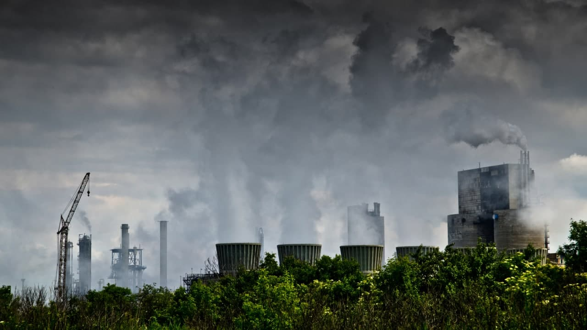
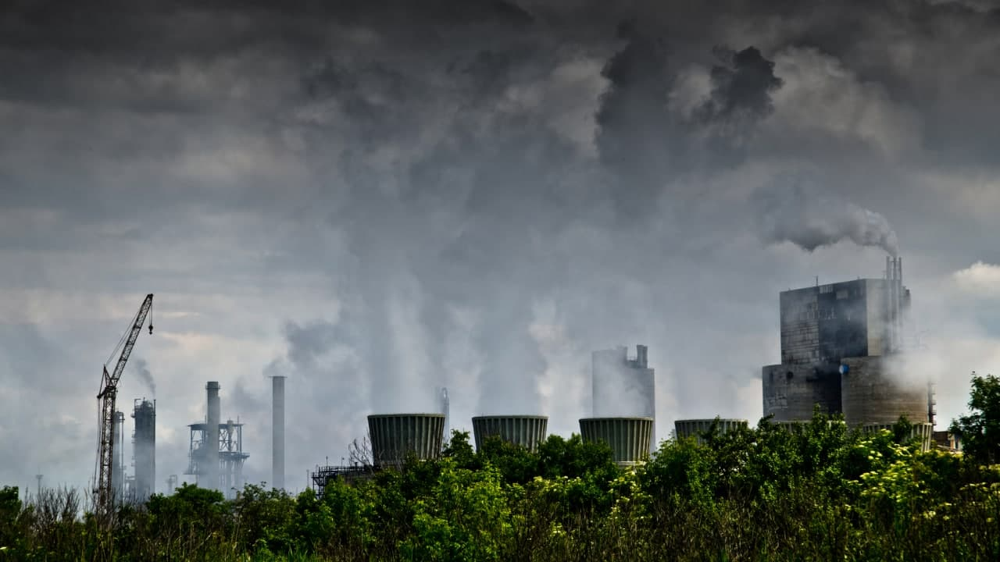

About website
We create this website from Global Perspective
read more
This is our first project.We collect information about air pollution from different websites. That websites' url in footer. If you want to visit that website, you can go to footer.
There is link to World's most polluted countries 2020
You can see Air Quality Index Visual Map in Uzbekistan in real-time.
Countries
China
read more
According to the Chinese Ministry of Health, industrial pollution has made cancer China's leading cause of death.
Every year, ambient air pollution alone killed hundreds of thousands of citizens.
500 million people in China are without safe and clean drinking water.
The Chinese Academy of Environmental Planning in 2003 produced an unpublished internal report which estimated that 300,000 people die each year from ambient air pollution, mostly of heart disease and lung cancer.
Air pollution levels dropped in early 2020 due to quarantines addressing the coronavirus pandemic. By early 2021, however, the levels had risen again.
The Chinese government is also spending money to combat pollution—for example, in 2013, China's Academy for Environmental Planning pledged $277 billion to combat urban air pollution. In the first batch of 74 cities that implemented the 2012 Environmental Air Quality Standards, the average concentration of PM2.5 and sulfur dioxide dropped by 42 percent and 68 percent, respectively, between 2013 and 2018.
In an attempt to reduce air pollution, the Chinese government has made the decision to enforce stricter regulations. After record-high air pollution in northern China in 2012 and 2013, the State Council issued an Action Plan for the Prevention and Control of Air Pollution in September 2013. This plan aims to reduce PM2.5 by over 10% from 2012 to 2017.
The most prominent government response has been in Beijing, aiming to reduce PM2.5 by 25% from 2012 to 2017. As the capital of China, it is suffering from high levels of air pollution. According to Reuters, in September 2013, the Chinese government published the plan to tackle air pollution problem on its official website. The main goal of the plan is to reduce coal consumption by closing polluting mills, factories, and smelters, and switching to other eco-friendly energy sources
The top five cities with the best air quality:
Lhasa, Haikou, Zhoushan, Xiamen, Huangshan
The 10 cities with worst air quality:
Anyang, Xingtai, Shijiazhuang, Handan, Linfen, Tangshan, Taiyuan, Zibo, Jiaozuo, Jincheng
Pollution in China is one aspect of the broader topic of environmental issues in China. Various forms of pollution have increased as China has industrialised, which has caused widespread environmental health problems.
 



India
read more
Vehicle exhaust is up to 30%
Biomass burning is up to 20%
Soil and road dust is up to 20%
Industries is up to 15%
Open waste burning is up to 15%
Diesel generators is up to 10%
Power plants is up to 5%
Outside the urban airshed is up to 30%
Ambient air pollution in India is estimated to cause 670,00 deaths annually and particularly aggravates respiratory and cardiovascular conditions including chronic bronchitis, lung cancer and asthma.
Ambient air pollution in India is estimated to cause 670,00 deaths annually and particularly aggravates respiratory and cardiovascular conditions including chronic bronchitis, lung cancer and asthma.

However, the main sources contributing to air pollution are well identified and this list is common for all Indian cities – vehicle exhaust, heavy industry including power generation, small scale industries including brick kilns, resuspended dust on the roads due to vehicle movement and construction activities
51% of the pollution is caused by industrial pollution, 27 % by vehicles, 17% by crop burning and 5% by other sources. Air pollution contributes to the premature deaths of 2 million Indians every year.
England
read more
The tipping point seems to have been dust from storms in the Sahara. Normally it settles in the countries of southern Europe - Spain, Malta and Greece, for example.
However, winds from the south and east have brought the dust to the UK, along with industrial pollution from Europe. And because those weather conditions are stable and not changing, those particles are not being dispersed.
But that is only part of the problem. Most air pollution in the UK comes from road transport and residential emissions.
Leaving aside the Sahara dust, the pollution is made up of various substances, including nitrogen dioxide, sulphur dioxide and ammonia.
These form particles in the atmosphere. The two most common measurements are particulate matter measuring 2.5 micrometres or less, known as PM2.5; and larger particles measuring 10 micrometres, known as PM10.
The World Health Organization (WHO) uses PM10 levels to measure pollution, expressed in micrograms per cubic metre. It recommends mean exposure over 24 hours to PM2.5 of no more than 10 micrograms/m3, and to PM10 of no more than 25.
PM2.5 particles are thought to be particularly damaging because they are so small, they can penetrate into the deepest parts of the lungs.
Indorii
UK Department for Environment Food and Rural Affairs air quality monitoring station (UK-AIR ID: UKA00362) at the National Trust's Wicken Fen nature reserve
Uzbekistan
read more
Contributors to poor air quality in Uzbekistan include dust storms, waste burning, the mining and oil and gas industries, and vehicle emissions. Available data indicates that Tashkent, Farghona, and Olmaliq are cities with consistently high levels of air pollution. In accordance with the World Health Organization's guidelines, the air quality in Uzbekistan is considered moderately unsafe. The most recent data indicates the country's annual mean concentration of PM2.5 is 28 µg/m3 which exceeds the recommended maximum of 10 µg/m3.
Earlier the air we breathe in was pure and fresh. However, because of industrialization and concentration of poisonous gases increase in the environment the air is getting more and more contaminated day by day. Also, these gases are the cause of many respiratory and other diseases. Moreover, the rapidly increasing human activities like the burning of fossil fuels, deforestation is the major cause of air pollution.
During the last few decades, the numbers of fossil fuel burning vehicle enlarged rapidly which increased the number of pollutants in the air like agricultural waste, power plants, and so on. Also, air pollution has many bad effects on the health of people.
We can improve the quality of air by planting more and more trees, as they clean and filter the air. We can reduce the amount of harmful toxic gases by adopting the usage of eco-friendly fuels, bio-gas or electricity cars.
Urazimbetova Roza
Objectives. This work explores characteristics of dispersion and the concentrations of pollutants. The Center of Hydrometeorological Service of the Republic of Uzbekistan (Uzhydromet) monitors air pollution in the cities of the Republic. The monitoring program covers 5 main pollutants: dust (suspended solids), carbon monoxide (carbon monoxide), nitrogen dioxide, sulfur dioxide, nitric oxide. The aim of the work is a hygienic assessment of the state of atmospheric air according to the Uzhydromet of the Republic of Uzbekistan. Materials and methods. The data of 63 stationary observation posts allows us to analyze the average level of air pollution in the republic and to calculate the atmospheric pollution index, which gives an integral characteristic of the air pollution level for the city over the year. Results and discussion. An analysis of the data showed that over the studied period, an increased degree of atmospheric pollution index was observed only in Angren: 2014 - 5.12, 2016 - 5.32, 2017 - 5.30. In other cities of the republic, increased IAP (Index of Atmospheric Pollution) was not observed. Conclusion. When assessing the sanitary state of the air environment of the populated areas of Uzbekistan, it should be noted that, despite the decrease in total emissions of pollutants, it is not accompanied by stabilization and, all the more, improvement in the quality of atmospheric air.
STATE OF ATMOSPHERIC AIR IN THE REPUBLIC OF UZBEKISTANFeruza Salomova
Hosiyat Sadullayeva
Guzal Sherkuzieva
N.F. Yarmuhamedova
Myanmar
read more
According to the World Health Organization's guidelines, the air quality in Myanmar is considered unsafe. Poor air quality in Myanmar include inefficient modes of transport, inefficient combustion of household fuel for cooking, lighting and heating, coal-fired power plants, manufacturing, mining, energy, construction industries, vehicle emissions, and agricultural waste burning. Available data indicates that Pyin Oo Lwin, Taungoo, Kyaukphyu, Namkham, and Yenanchaung have high levels of air pollution. When planning a trip, consider health status, old age, destination, length of trip and season to mitigate the effects of air pollution. Air pollution can cause itchy eyes, nose and throat, wheezing, coughing, shortness of breath, chest pain, headaches, nausea, and upper respiratory infections.
San Theingi
More than 45,000 of peoples are dead because of air pollution, in 2017.As a risk factor for death, air pollution is higher in Myanmar than in other countries in the region, almost twice the average for Southeast Asia. According to research, air pollution in Myanmar is very unsafe for people who lived in Myanmar. Air pollution can cause many diseases such as heart disease, lunch cancer, emphysema and so on. Myanmar has many different sources of pollution, all coming together to form the elevated readings seen year round, with some being more prominent than others and subject to change according to the different months of the year, with variations occurring due to both meteorological and anthropogenic (human caused) conditions.
Thuya
Azerbaijan
read more
Azərbaycanda həddindən artıq maşın var və bu maşınların əksəriyyəti benzinle işləyir. Maşından çıxan tüstülər vasitəsi ilə hava çirklənir Azərbaycanda havanın çirklənməsinə yalnız maşınlar yox zavodlarda səbəb olur. Bunun qarşısını almaq üçün xüsusi filterlərdən istifadə edilir. Bundan lavə zibillərin yanmasına görə hava çirklənir.
Translated:
There are too many cars in Azerbaijan, and most of these cars run on gasoline. Air pollution through car exhaust In Azerbaijan, air pollution is caused not only by cars, but also by factories. Special filters are used to prevent this. In addition, the air is polluted due to the burning of garbage.
Vaqif Zaidov